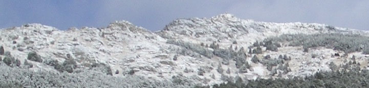

Sonia
Estévez Martín
Homepage
Teaching
Publications
Activities
ToySets
Eclipse
Events Organization
ICCCI 2015, 7th International Conference on Computational Collective Intelligence Technologies and Applications
ICTSS'14,The 26th IFIP International Conference on Testing Software and Systems
SEFM 2013,11th International Conference on Software Engineering and Formal Methods
QSIC 2011,11th International Conference On Quality Software
5th TAROT Summer School on Software Testing, 2009
WFLP 2006, 15th Workshop on Functional and (Constraint) Logic Programming